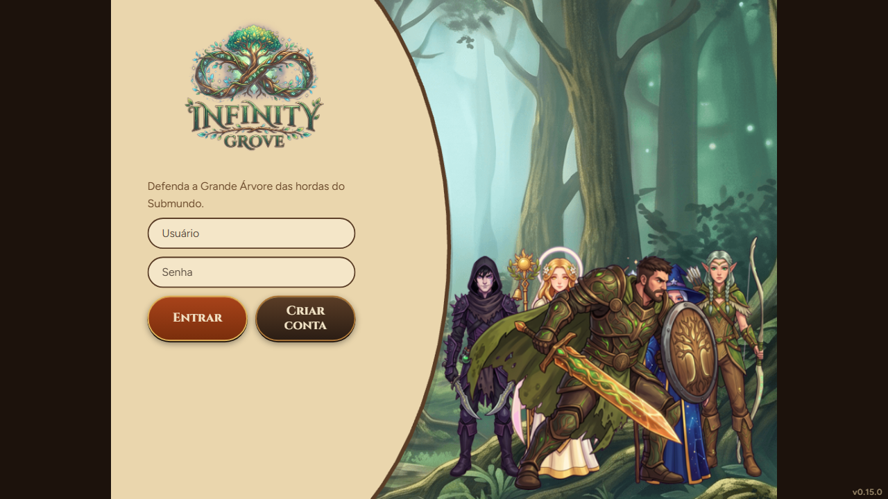
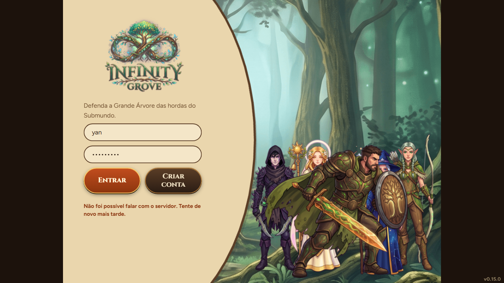
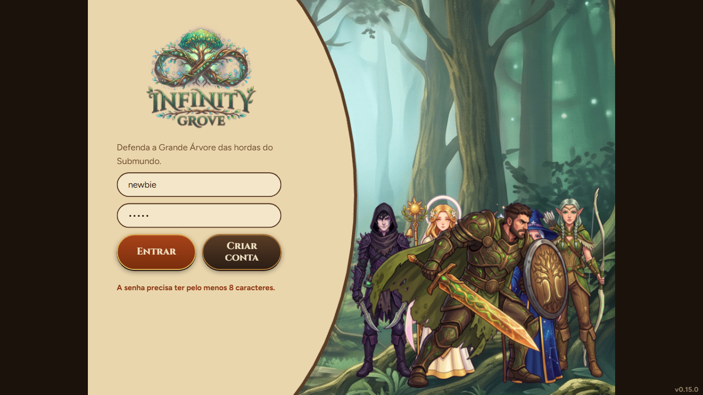
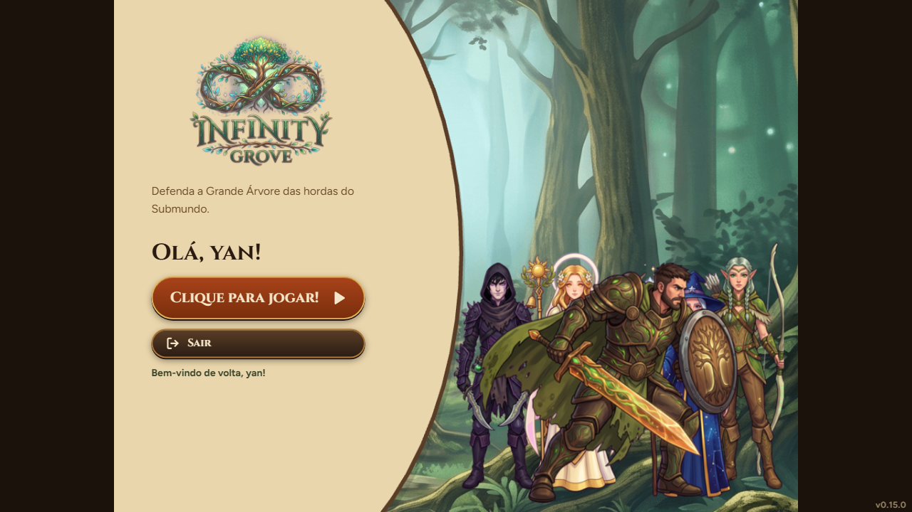
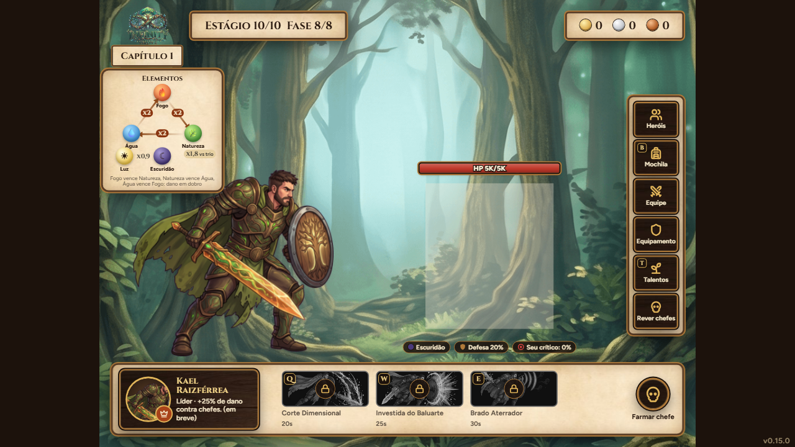
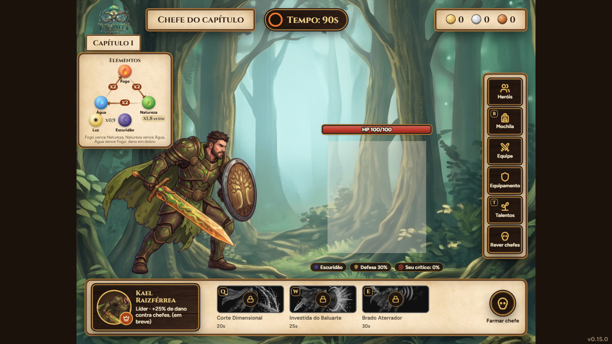
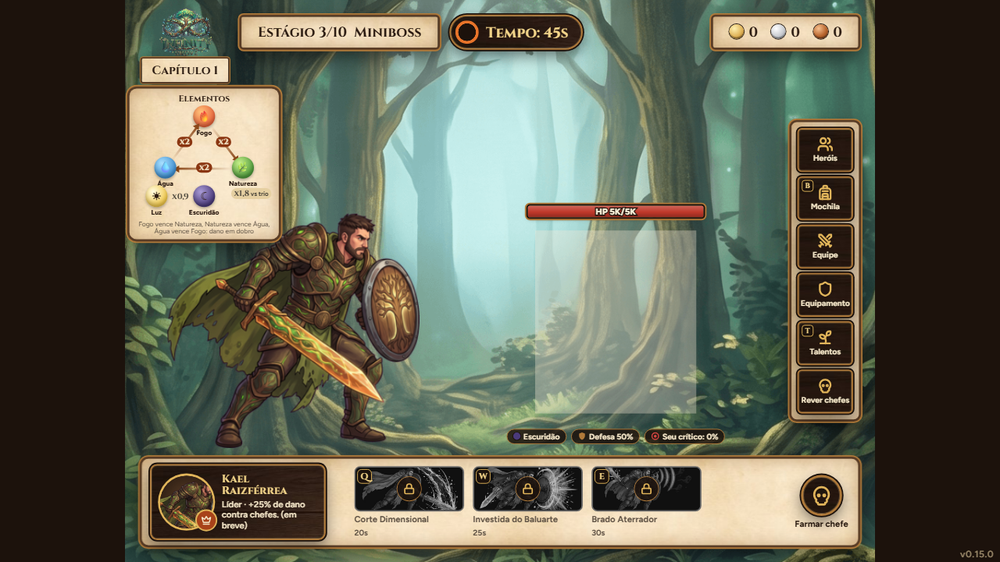
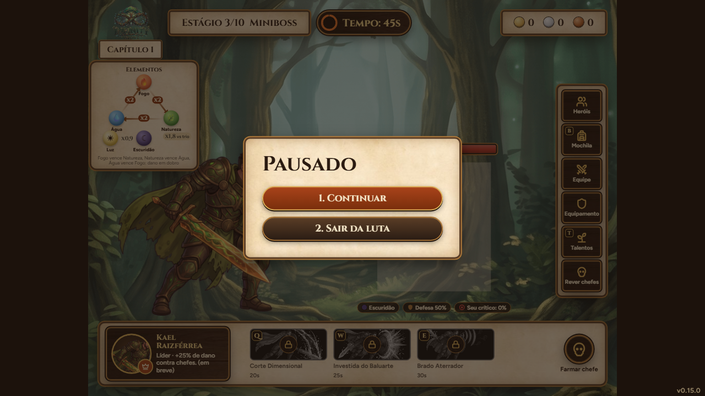
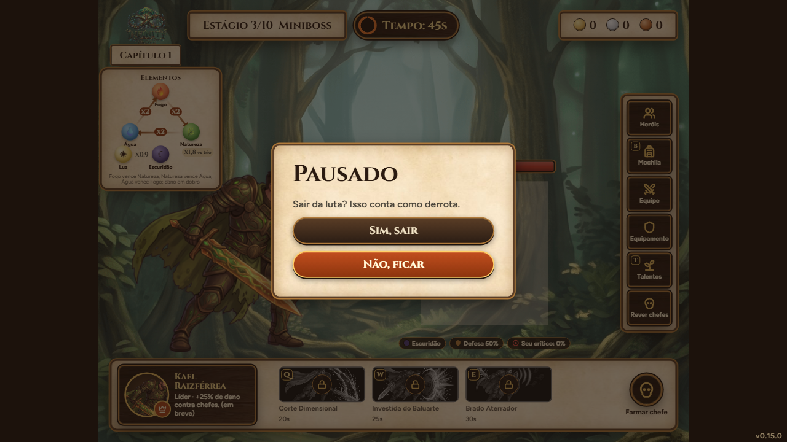
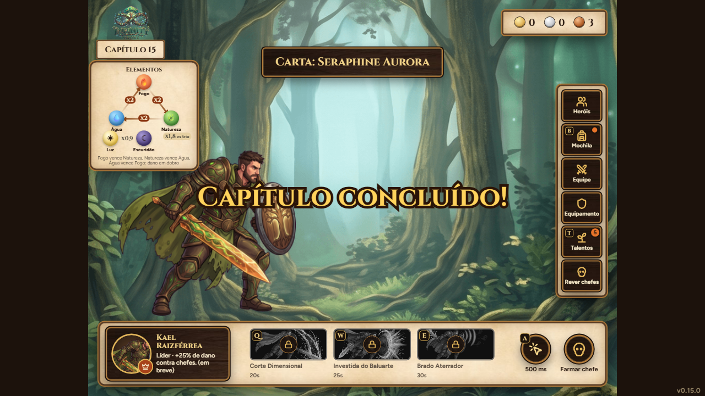

Infinity Grove · Revisão de UI
Texto em português
Os textos em português cabem onde os ingleses cabiam: nada cortado nem sobreposto nos 12 estados revisados. O timer do boss mantém 12 px de folga da placa (justo no miniboss, 19 px no chefe do capítulo), a pílula de início, o rótulo Farmar chefe e os botões da pausa ficam em uma linha, e os acentos renderizam em Cinzel e Figtree. Sem achados; duas sugestões de gosto.
12
telas e estados verificados
12
capturas (desktop)
0
achados de severidade alta
0
achados médios e baixos
Fidelidade à spec
- ✓A placa do estágio cresceu (Estágio/Fase) e o timer continua 12 px ou mais à direita dela: 12 px no miniboss, 19 px no chefe do capítulo.
design § Layout, Stage plate - ✓Clique para jogar! em uma linha na pílula de 320 px, com o ícone dentro.
design § Layout, Start prompt - ✓Tempo: 45s e Tempo: 90s em uma linha dentro do anel.
design § Layout, Boss timer - ✓A linha do inimigo (Escuridão, Defesa, Seu crítico) não quebra.
design § Layout, Element chip - ✓Farmar chefe em uma linha sob o botão de 56 px, dentro da barra de batalha.
design § Layout, Farm switch label - ✓Sim, sair, Não, ficar, 1. Continuar e 2. Sair da luta em uma linha dentro do cartão.
design § Layout, Pause menu - ✓O erro offline (o mais longo) quebra dentro da coluna oval, sem corte.
design § Layout, Message line - ✓Acentos (á, ã, é, í, ç) renderizam em Cinzel e Figtree, sem caixas vazias. Cores, fontes e bordas do Grove não mudaram (AD-022).
tasks T11, Check against - ✓Todo o texto novo visível está em português; nenhuma palavra em inglês nas telas capturadas.
AD-007
Capturas
Formulário de entrada



Boas-vindas

HUD de combate




Menu de pausa


Fim do capítulo

Achados
Nenhum achado.
Sugestões
- ✦Criar conta quebra em duas linhas no botão de 143 px (Entrar fica em uma). Cabe e não corta, mas um tamanho de fonte um ponto menor, ou botões com larguras diferentes, manteria os dois rótulos em uma linha (
game/public/style.css, botão do formulário). - ✦Fora do escopo desta feature: o painel de elementos mostra "x1,8 vs trio" e a caixa cinza translúcida no lugar do monstro vem do backend falso das capturas (sem sprite), não do jogo.
Console e recursos
Nenhum erro nem recurso faltando visto nas capturas. O Claude in Chrome não foi usado: as capturas são do Playwright (npm run ui:shots -- portugueseText), e o console não foi lido.